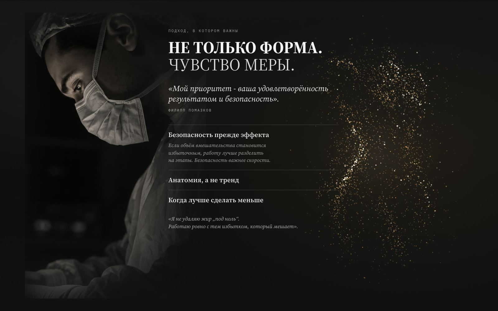

Сайт
пластического
хирурга.
Делаю сайт пластического хирурга под ключ: от 60 000 ₽, срок до месяца. Пример: сайт Филиппа Помазкова, который начался с досье бренда и исследования, а не с макета.

Сначала
исследование.
- 10страниц досье бренда по открытым источникам: соцсети, Telegram, ПроДокторов
- 85 000+знаков исследования воронки медицинских сайтов и архитектуры
- 12блоков структуры: каждый отвечает на один вопрос пациента
Вывод исследования: сайт хирурга продаёт не операцию и даже не врача, а снижение неопределённости перед личным решением с риском.
Что пациенты
говорят сами.
«Результат не совпадёт с тем, что в голове»
Кейсы как история решения: с чем пришла пациентка, какие были варианты, почему выбрали этот путь.
«Долгая реабилитация. Наркоз»
Путь пациента из семи точек с живыми деталями. Например, что список анализов действует 10 дней.
«Молодой возраст»
Не оправдываться и не выносить в заголовок, а закрыть образованием, путём врача и сопровождением после операции.
Естественный
результат.
Главный оффер сайта не «сделаем больше и ярче», а естественный результат. В досье зафиксировано, что Филипп открыто допускает менее инвазивный вариант вместо максимального вмешательства.
Стажем не соревнуемся. Авторская фраза «Скульптор твоего тела» идёт вторым планом: для операций на лице главный оффер должен звучать серьёзнее.
Семь точек
пути пациента.
- Консультация
- Решение
- Подготовка
- Операция
- Первые дни
- Восстановление
- Контроль результата
Честная цена.
Запись без форм.
Цену операции нельзя назвать заранее, и сайт этого не скрывает. Он объясняет, из чего она складывается, и обещает: итоговая смета обсуждается до операции и не меняется задним числом.
Пациент выбирает дату, время и тему разговора, сайт открывает Telegram с готовым сообщением. Не нужно звонить и объяснять вслух интимный вопрос.
На телефоне: нижнее меню из пяти разделов, длинные блоки разбиты на экраны, запись открывается шторкой с выбором даты.
Не витрина «до и после»,
а ход мысли.
- Реальные материалы
Результаты только на реальных фото. AI‑визуалы создают атмосферу и не выдаются за документальную съёмку.
- Согласие пациента
Письменное согласие на разглашение врачебной тайны (ч. 3 ст. 13 323‑ФЗ) и на использование изображения (ст. 152.1 ГК РФ).
- Реклама
В рекламе медуслуг нельзя ссылаться на случаи улучшения здоровья и благодарности пациентов (п. 2, 3 ч. 1 и ч. 3 ст. 24 закона «О рекламе»).
- Лицензия и противопоказания
Сведения о лицензии клиники, «Имеются противопоказания» (ч. 7 ст. 24), Метрика только после согласия на cookie.
К новому сайту 5 000 ₽ · готовый сайт 15 000 ₽. Проверяю и внедряю сама: я юрист.Проверить текущий сайт бесплатно →

«Колоссальную работу ты проделала, прям реально титаническую. Получилось всё даже лучше, чем я себе это представлял.»
Цены и сроки.
Сайт хирурга: подход, направления, путь пациента, запись.
Отдельные страницы направлений, кейсов и пути пациента.
Нестандартная механика, отдельная мобильная версия.
Для готового сайта: «Сайт по закону», для медицины 15 000 ₽.
Срок разработки до месяца.Итог зависит от структуры, числа страниц, контента и сложности механики.
Частые
вопросы.
Сколько стоит сайт пластического хирурга?
+
Одностраничный сайт от 60 000 ₽, многостраничный от 80 000 ₽, сложные сценарии и отдельная мобильная версия от 150 000 ₽. Юридическая часть к новому сайту 5 000 ₽.
Сколько времени займёт разработка?
+
До месяца. Точный срок называю после того, как посмотрю задачу и объём работы.
Зачем личный сайт, если я оперирую в клинике?
+
Пациент выбирает хирурга, а не клинику. Личный сайт показывает ваш подход, кейсы и путь пациента, а запись ведёт напрямую к вам. Сведения о лицензии клиники, в которой вы оперируете, на сайте тоже есть.
Как показать фото «до и после»?
+
Как историю решения: с чем пришёл пациент, какие были варианты, почему выбрали этот путь. Только реальные фото и только с письменного согласия пациента. В рекламе медицинских услуг ссылки на конкретные случаи улучшения запрещены (ст. 24 закона «О рекламе»).
Что делать, если цену операции нельзя назвать заранее?
+
Сказать это прямо. На сайте Филиппа Помазкова блок о цене объясняет, из чего складывается стоимость, и обещает, что итоговая смета обсуждается до операции и не меняется задним числом.
Нужна ли форма записи на сайте хирурга?
+
Не обязательно. На сайте Филиппа Помазкова пациент выбирает дату, время и тему разговора, а сайт открывает Telegram с готовым сообщением. Персональных и медицинских данных сайт при этом не собирает.
Расскажите
о практике.
Где оперируете, какие направления главные и есть ли сайт сейчас. Отвечу сама и скажу, с чего начать.